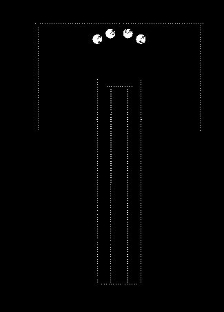
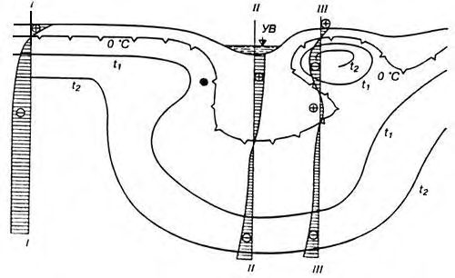
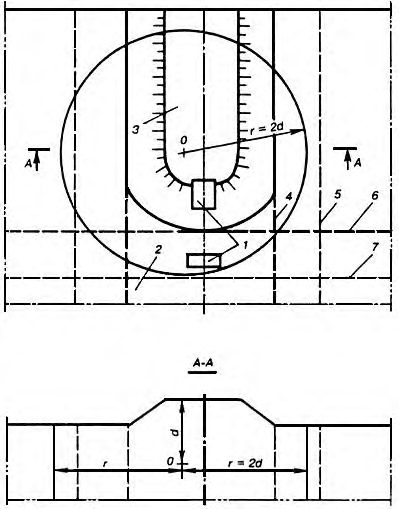
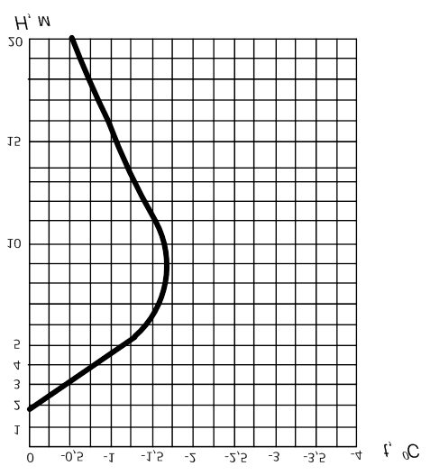
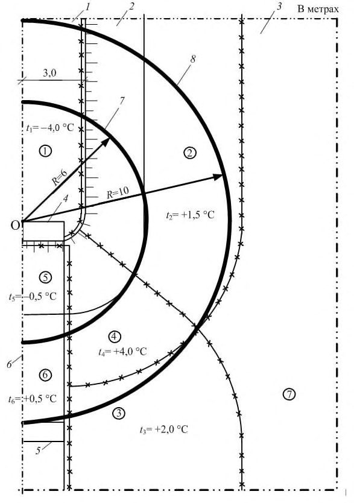

СП 354.1325800.2017 «Фундаменты опор мостов в районах распространения многолетне»
О документе: разработчики, утверждение, регистрация, ключевые слова
СВОД ПРАВИЛ
СП 354.1325800.2017
Издание официальное
- 1 ИСПОЛНИТЕЛЬ - ООО «Лаборатория инженерной теплофизики» (ООО «ЦЛИТ»)
2 ВНЕСЕН Техническим комитетом по стандартизации ТК 465 «Строительство»
3 ПОДГОТОВЛЕН к утверждению Департаментом градостроительной деятельности и архитектуры Министерства строительства и жилищнокоммунального хозяйства Российской Федерации (Минстрой России)
- 4 УТВЕРЖДЕН приказом Министерства строительства и жилищнокоммунального хозяйства Российской Федерации от 14 ноября 2017 г. № 1543/пр и введен в действие с 15 мая 2018 г.
- 5 ЗАРЕГИСТРИРОВАН Федеральным агентством по техническому регулированию и метрологии (Росстандарт)
6 ВВЕДЕН ВПЕРВЫЕ
В случае пересмотра (замены) или отмены настоящего свода правил соответствующее уведомление будет опубликовано в установленном порядке. Соответствующая информация, уведомление и тексты размещаются также в информационной системе общего пользования - на официальном сайте разработчика (Минстрой России) в сети Интернет
© Минстрой России, 2017
Настоящий нормативный документ на может быть полностью или частично воспроизведен, тиражирован и распространен в качестве официального издания на территории Российской Федерации без разрешения Минстроя России
Дата введения - 2018-05-15
УДК 624.21.04 ОКС 93.040
Ключевые слова: многолетнемерзлые грунты, температура грунта, буровой столб, основания фундаментов, бетонирование, заделка столбов
Руководитель организации-разработчика ЗАО «ПРОМТРАНСНИИПРОЕКТ» Директор
Руководитель разработки Заместитель директора по науке
Исполнитель
Начальник отдела Комплексных исследований, стандартизации и логистического сопровождения проектов И.П. Потапов
Руководитель организации соисполнителя:
ООО «Лаборатория инженерной теплофизики» (ООО «ЦЛИТ»)
Генеральный директор
В.В.Пассек
В.А. Сидяков
Л.А. Андреева
Введение
Настоящий свод правил разработан в соответствии с Федеральным законом от 30 декабря 2009 г. № 384-ФЗ «Технический регламент о безопасности зданий и сооружений», Федеральным законом от 22 июля 2008 г. № 123-ФЗ «Технический регламент о требованиях пожарной безопасности», Федеральным законом от 23 ноября 2009 г. №261-Ф3 «Об энергосбережении и о повышении энергоэффективности и о внесении изменений в отдельные законодательные акты Российской Федерации», Федеральным законом от 27 декабря 2002 г. № 184-ФЗ «О техническом регулировании»
Настоящий свод правил подготовлен авторским коллективом АО ЦНИИС (руководитель -д-р техн. наук А.А. Цернант , канд. техн. наук В.П. Рыбчинский , канд. техн. наук И.А. Бегун ), ООО «Лаборатория инженерной теплофизики» (ответственный исполнитель - д-р техн. наук В.В. Пассек , канд. техн. наук Н.А. Цуканов , канд. техн. наук В.П. Величко , канд. техн. наук Вяч.В. Пассек , канд. техн. наук В.Г. Дубинин ).
1Область применения
Настоящий свод правил распространяется на проектирование и устройство фундаментов опор постоянных мостов, путепроводов и эстакад на железных и автомобильных дорогах, сооружаемых в районах распространения многолетнемерзлых грунтов.
2Нормативные ссылки
- В настоящем своде правил использованы нормативные ссылки на следующие документы:
- ГОСТ 5686-2012 Грунты. Методы полевых испытаний сваями
- ГОСТ 14098-2014 Соединения сварные арматуры и закладных изделий железобетонных конструкций. Типы, конструкции и размеры
ГОСТ 25100-2011 Грунты. Классификация
- СП 14.13330.2014 «СНиП II-7-81* Строительство в сейсмических районах» (с изменением № 1)
- СП 22.13330.2016 «СНиП 2.02.01-83* Основания зданий и сооружений»
- СП 24.13330.2011 «СНиП 2.02.03-85 Свайные фундаменты» (с изменением № 1)
- СП 25.13330.2012 «СНиП 2.02.04-88 Основания и фундаменты на вечномерзлых грунтах» (с изменением № 1)
- СП 28.13330.2017 «СНиП 2.03.11-85 Защита строительных конструкций от коррозии»
- СП 35.13330.2011 «СНиП 2.05.03-84* Мосты и трубы» (с изменением № 1)
- СП 45.13330.2017 «СНиП 3.02.01-87 Земляные сооружения, основания и фундаменты»
- СП 46.13330.2012 «СНиП 3.06.04-91 Мосты и трубы» (с изменениями № 1, № 3)
- СП 47.13330.2016 «СНиП 11-02-96 Инженерные изыскания для строительства. Основные положения»
\_\_\_\_\_\_\_\_\_\_\_\_\_\_\_\_\_\_\_\_\_\_\_\_\_\_\_\_\_\_\_\_\_\_\_\_\_\_\_\_\_\_\_\_\_\_\_\_\_\_\_\_\_\_\_\_\_\_\_\_\_\_\_\_\_\_
Правила проектирования и строительства
Foundations of bridge supports in areas of permafrost soils. Design and construction rules
СП 48.13330.2011 «СНиП 12-01-2004 Организация строительства» (с изменением № 1)
СП 63.13330.2012 «СНиП 52-01-2003 Бетонные и железобетонные конструкции. Основные положения» (с изменениями № 1, № 2, № 3)
СП 70.13330.2012 «СНиП 3.03.01-87 Несущие и ограждающие конструкции» (с изменениями № 1, № 3)
СП 131.13330.2012 «СНиП 23-01-99* Строительная климатология» (с изменениями № 1, № 2)
Примечание - При пользовании настоящим сводом правил целесообразно проверить действие ссылочных документов в информационной системе общего пользования -на официальном сайте федерального органа исполнительной власти в сфере стандартизации в сети Интернет или по ежегодному информационному указателю «Национальные стандарты», который опубликован по состоянию на 1 января текущего года, и по выпускам ежемесячного информационного указателя «Национальные стандарты» за текущий год. Если заменен ссылочный документ, на который дана недатированная ссылка, то рекомендуется использовать действующую версию этого документа с учетом всех внесенных в данную версию изменений. Если заменен ссылочный документ, на который дана датированная ссылка, то рекомендуется использовать версию этого документа с указанным выше годом утверждения (принятия). Если после утверждения настоящего свода правил в ссылочный документ, на который дана датированная ссылка, внесено изменение, затрагивающее положение, на которое дана ссылка, то это положение рекомендуется применять без учета данного изменения. Если ссылочный документ отменен без замены, то положение, в котором дана ссылка на него, рекомендуется применять в части, не затрагивающей эту ссылку. Сведения о действии сводов правил целесообразно проверить в Федеральном информационном фонде стандартов.
3Термины и определения
В настоящем своде правил применены следующие термины с соответствующими определениями:
- 3.1глубина нулевых годовых амплитуд температур в грунте
- Глубина, на которой температура грунта остается неизменной в течение всего годового периода независимо от сезонных колебаний температуры воздуха на поверхности.
- 3.2грунт засоленный
- Грунт, содержащий водорастворимые соли.
- 3.3грунт мерзлый
- Грунт, имеющий отрицательную или нулевую температуру, содержащий в своем составе видимые ледяные включения и (или) лед-цемент и характеризующийся криогенными структурными связями.Источник: CП 25.13330.2012
- 3.4грунт многолетнемерзлый
- Грунт, находящийся в мерзлом состоянии постоянно в течение трех и более лет.Источник: CП 25.13330.2012
- 3.5грунт пластично-мерзлый
- Грунт с большим содержанием незамерзшей воды, находящийся при температуре ниже 0°C, но выше температуры замерзания; обладает пластическими свойствами и может деформироваться под нагрузкой.
- 3.6грунт сухомерзлый
- Песчаный грунт с суммарной влажностью до 6%, гравийно-песчаный грунт с влажностью заполнителя до 6 %.
- 3.7грунт сыпучемерзлый
- Крупнообломочный и песчаный грунт, имеющий отрицательную температуру, но не сцементированный льдом и не обладающий силами сцепления.
- 3.8грунт твердомерзлый
- Прочно смерзшийся, практически несжимаемый грунт, находящийся при температуре ниже границы замерзания.
- 3.9деградация мерзлоты
- Многолетний процесс постепенного повышения среднегодовой температуры многолетнемерзлого грунта, приводящий со временем к понижению верхней поверхности мерзлоты, разобщению ее от слоя сезонного промерзания и росту зоны постоянно талого грунта между ними.
- 3.10мостовое сооружение (мост)
- Искусственное сооружение над различными препятствиями для пропуска различных видов транспорта и пешеходов, а также водотоков, селей, скота, коммуникаций различного назначения - порознь или в различных комбинациях.Источник: СП 35.13330.2011, приложение Б
- 3.11мостовой переход
- Комплекс сооружений, включающий мост, участки подходов в пойме реки, регуляционные и другие укрепления.Источник: СП 35.13330.2011, приложение Б
- 3.12приведенная температура воздуха
- Температура наружного воздуха, полученная на метеостанции и откорректированная с учетом солнечной радиации и испарения с поверхности.
- 3.13растепление мерзлоты
- Повышение температуры многолетнемерзлого грунтового массива.
- 3.14сезоннодействующие охлаждающие установки; СОУ
- Замкнутые теплообменные устройства различного типа с газообразным, жидким или парожидкостным теплоносителем, применяемые для охлаждения и замораживания грунта за счет действия естественной разности температур грунта и окружающего воздуха.
- 3.15слой сезонного оттаивания
- Поверхностный слой грунта, оттаивающий в летний период.
- 3.16среднегодовая температура многолетнемерзлых грунтов
- Температура грунта на глубине нулевых годовых амплитуд (10-15 м).
- 3.17талик
- Толща талых и немерзлых пород в зоне вечной мерзлоты, распространенная с поверхности или ниже слоя сезонного промерзания и существующая более одного года.
- 3.18температура замерзания
- Температура, при которой в грунте замерзает более 90 % воды.
- 3.19температура начала замерзания (оттаивания)
- Температура, при которой в порах грунта появляется (исчезает) лед.
- 3.20температурное поле
- Совокупность температур в каждой точке расчетной области грунта на рассматриваемый момент времени.
- 3.21термокарст
- Образование просадочных и провальных форм рельефа и подземных пустот вследствие вытаивания подземного льда или оттаивания мерзлого грунта.
- 3.22температурный режим грунтов; ТР
- Изменение температурных полей во времени.
- 3.23уширенная площадка
- Насыпь с горизонтальной поверхностью, размеры которой в плане существенно превосходят ее высоту, устраиваемая около какого-либо сооружения (опора моста, насыпь железной или автомобильной дороги) с целью понижения температуры грунтового основания основного сооружения.
4Общие положения
- принцип I - грунты основания используют в мерзлом состоянии, сохраняемом в течение всего периода эксплуатации сооружения. При этом грунты могут быть мерзлыми до строительства или замораживаемыми в процессе строительства;
- принцип II - грунты основания используют в талом или оттаивающем состоянии.
Рекомендуется применять принцип I. Применение принципа II связано с более значительными неопределенностями с нарушением равновесия среды, в частности, с протаиванием смежных массивов, расположенных рядом или внизу, что может привести к линейной деформации или сдвигу больших массивов.
Общие положения, относящиеся к вопросам проектирования и устройства фундаментов опор мостов как на используемых в мерзлом или талом состоянии многолетнемерзлых грунтах, так и на немерзлых грунтах в части проектирования и сооружения фундаментов и надфундаментной части опор, отсыпки и укрепления конусов, укрепления русел и т. п. следует принимать в соответствии с действующими нормативными документами.
При проектировании конструкции и технологии возведения искусственного сооружения должны быть определены особенности не только самого сооружения, но и полосы отвода (характер растительности, возможность возведения других сооружений и т. п.). Эти особенности должны быть учтены при разработке проекта сооружения и схемы мониторинга. При этом должны быть учтены следующие главные факторы, влияющие на изменение температурного режима: снегоотложения, изменение уровня грунтовых или поверхностных вод, изменение растительного покрова (его ликвидация при строительстве или, наоборот, в локальных зонах таликов рост кустарника или деревьев, вызывающих повышенные снежные заносы).
На снегозаносимых участках граница полосы отвода устанавливается с учетом расположения снегозадерживающих сооружений.
5Проектирование фундаментов опор мостов
5.1Общие положения
Выбор вышеуказанных мероприятий, а также самого конструктивного решения, следует проводить на основании теплофизического расчета и указаний раздела 7, а также приложения А.
- пропуск воды под одним мостом от нескольких соседних постоянных или периодических водотоков (за исключением протоков одного водотока);
- застой воды в пересыпанных протоках;
- длительную аккумуляцию воды под мостами и на подходах;
- срезки дна водотоков без укрепления против размыва;
- срезку русла со вскрытием сильнольдистых грунтов или подземных льдов;
- отвалы грунта, приводящие к застою воды под мостом и увеличению снегозаносимости;
- погружение свай с использованием метода протаивания грунтов основания.
- данные о мерзлотно-грунтовых условиях на строительной площадке, в том числе об особенностях распространения по площади и глубине залегания многолетнемерзлых грунтов, их генезисе, литологическом и гранулометрическом составах, криогенном строении, особенностях напластования, температуре, максимальных толщинах слоев сезонного промерзания и оттаивания, средней годовой температуре грунта на глубине 10-15 м, мерзлотных процессах (наледях, буграх пучения, термокарсте, солифлюкционно-оползневых образованиях и др.), степени засоленности грунтов, наличии включений концентрированных солевых растворов (криопегов) и их напоре;
- результаты полевых и лабораторных исследований и испытаний грунтов, отражающие литологические типы, криогенное строение, физические, теплофизические и механические свойства в талом и мерзлом состояниях: для нескальных грунтов - плотность, влажность, льдистость, просадочность при оттаивании, угол внутреннего трения, сцепление, теплоемкость, коэффициент теплопроводности; для скальных грунтов степень выветрелости и трещиноватости, временное сопротивление на одноосное сжатие, коэффициент размягчаемости в воде и др.;
- дополнительные данные, необходимые для прогнозирования возможных изменений мерзлотных условий на строительной площадке, в том числе данные о продолжительности периодов и среднемноголетних значениях положительных и отрицательных температур воздуха, толщине снежного покрова, мохорастительном и торфяном покровах, а также о характерных особенностях проектируемого мостового перехода и производства работ по возведению опор моста и т. п.;
- исходные данные и требования, необходимые для разработки мероприятий по охране окружающей среды и защите от опасных природных процессов, подлежащие включению в проект опор моста, а также в проект организации и производства строительных работ (с целью обеспечения максимальной сохранности мохорастительного покрова, минимальных нарушений естественных условий напластования грунтов и протекания водотоков).
Кроме сведений о подземных водах должны быть получены данные о наземных (поверхностных) водах, включающие расчетные уровень и расход воды; в водотоке рабочие уровни для каждого месяца в году; уровни высокой и низкой межени; графики среднемноголетней продолжительности стояния характерных уровней воды; сведения о датах начала и конца ледостава и ледохода, толщине льда, уровнях ледостава и ледохода, возможных заторах льда; сведения о характере и степени агрессивности воды.
В дополнение к перечисленным сведениям необходимо учитывать специфические особенности водотоков, характеризующие:
- прохождение паводков поверх ледяного покрова, обычно образующегося на перекатах при промерзании водотоков до дна, а также в местах появления наледей или ледяных заторов, возникающие при таких паводках подпоры воды и связанное с ними повышение ее уровней;
- возможные деформации русла в результате прохода паводков по ледяному покрову или по наледям (спрямления русла, глубинные, боковые размывы русла и т. п.).
В зависимости от принципа использования грунтов в качестве оснований глубина скважин должна не менее чем на 5 м превышать глубину заложения фундаментов при применении принципа I и не менее чем на 5 м - подошву возможной чаши оттаивания грунтов под фундаментом при применении принципа II.
В местах распространения засоленных мерзлых грунтов с включением линз криопегов количество скважин должно соответствовать, как минимум, количеству опор моста. При этом подлежат четкому определению абсолютные отметки залегания линз криопегов и их мощность, а также наличие напора высокоминерализованных вод на момент проходки скважин.
- мерзлые грунты должны быть преимущественно сливающегося типа, температура которых в течение всего периода эксплуатации моста не будет превышать значений, принятых в расчетах несущей способности основания;
- в местах сильных снежных заносов продольный профиль дороги должен обеспечивать в пределах перехода наличие просвета под мостом, с учетом требований приложения К;
- для предотвращения наледей рекомендуется с верховой стороны моста на расстоянии 50-100 м осуществлять перехват подруслового потока, например, с помощью мерзлотной завесы, устраиваемой с использованием охлаждающих устройств. Для предотвращения появления термокарста следует предусматривать меры по исключению возможности длительного застоя воды у подходной насыпи и под мостом, а также существенного повреждения мохорастительного покрова в зоне мостового перехода;
- дно русла в местах его возможного значительного размыва должно быть укреплено на длине не менее 15 м в верховую и низовую стороны от оси моста;
- промежуточные опоры рекомендуется размещать вне пределов меженного русла;
- свайные элементы (сваи разных типов) фундаментов следует погружать в мерзлые грунты ниже уровня максимально возможного их оттаивания на глубину, обеспечивающую восприятие расчетных нагрузок, включая силы морозного выпучивания;
- низ свайных элементов необходимо располагать не менее чем на 4 м выше поверхности подземного льда или сильнольдистых грунтов. Если это условие невыполнимо, такие грунты должны быть прорезаны свайными элементами, а при невозможности этого - решение об использовании сильнольдистых грунтов в качестве оснований следует принимать индивидуально.
Для грунтов в основании фундамента отдельной опоры совместное использование двух принципов не допускается.
5.2Особенности проектирования и расчета фундаментов опор и грунтовых оснований
Безростверковые опоры для железнодорожных мостов допускается применять в обсыпных устоях, а в промежуточных опорах - на суходолах для малых и средних мостов.
- по несущей способности оснований, устойчивости положения фундаментов опор против опрокидывания и сдвига (плоского или глубокого), устойчивости фундамента на действие сил морозного пучения грунта;
- деформациям оснований и фундаментов (осадкам, кренам, горизонтальным смещениям).
Элементы железобетонных конструкций фундаментов рассчитывают на трещиностойкость.
Предельно допустимую ширину раскрытия трещин в железобетонных свайных элементах опор и фундаментов на стадии эксплуатации в неагрессивной среде от воздействия постоянных и временных нагрузок принимают согласно СП 35.13330.
Для железобетонных элементов опор, расположенных в агрессивной среде, допустимую ширину раскрытия трещин принимают согласно СП 28.13330.
- твердомерзлых грунтов по принципу I - по несущей способности;
- многолетнемерзлых грунтов по принципу II, а пластично-мерзлых по принципу I - по несущей способности и деформациям.
Значения расчетных глубин сезонного оттаивания или промерзания грунтов в основании опор рекомендуется принимать:
- для промежуточных опор, расположенных в пределах суши, пойменных участков и в руслах промерзающих до дна водотоков -соответственно от поверхности грунта, предварительной срезки (планировки) или от поверхности льда;
- обсыпных устоев - от поверхности конуса, считая по нормали к ней.
где N max - наибольшее сжимающее продольное усилие в верхнем сечении элемента, кН (тс);
G - собственный вес элемента, кН (т); m = 1 - коэффициент условий работы;
д - коэффициент надежности, принимаемый для используемых по принципу I мерзлых грунтов равным 1,4 независимо от количества свайных элементов в фундаменте и от положения подошвы ростверка по отношению к поверхности грунта, а для грунтов, используемых по принципу II - согласно СП 24.13330 (как для немерзлых грунтов);
- Fu - несущая способность по грунту элемента, определяемая по указаниям СП 25.13330 или СП 24.13330, кН (т).
При определении несущей способности Fu допускается учитывать влияние кратковременного характера действия подвижных нагрузок
(согласно СП 25.13330), приняв следующие значения дополнительного повышающего коэффициента для части, относящейся к учету воздействия временных вертикальных и горизонтальных нагрузок в расчетах несущей способности оснований свайных элементов опор: железнодорожных мостов при одновременном действии сжимающих вертикальных постоянных и временных вертикальных нагрузок - 1,35; то же, но совместно с временными горизонтальными нагрузками (включая сейсмические нагрузки) -1,5; автодорожных мостов - соответственно 1,5 и 1,75. Для железнодорожных мостов на станционных и подъездных путях, а также других мостов, на которых возможны систематические остановки поездов или автомобилей на неопределенное время, не допускается повышать значение Fu за счет учета временного характера действия подвижной нагрузки.
где Pdu - наибольшее выдергивающее продольное усилие в верхнем сечении элемента, кН (т);
Fdu - несущая способность элемента на выдергивание, кН (т).
Передача выдергивающих усилий на основание свайных элементов от одних постоянных нагрузок и воздействий не допускается.
- всех типов в местах, где слой сезонного промерзания-оттаивания состоит из крупного песка и крупнообломочных грунтов с содержанием глинистого заполнителя не более 10 %;
- обсыпных устоев в местах, где сезонное промерзание-оттаивание грунта конуса не достигает его основания, сложенного с поверхности пучинистыми грунтами, или подошвы непучинистого грунта, уложенного в основании конуса взамен удаленного естественного пучинистого грунта;
- промежуточных опор, расположенных в пределах непромерзающих до дна водотоков.
Кроме того, для указанных условий следует проверить возможность появления локальных (местных) оползневых сдвигов на ранее устойчивых склонах вследствие дополнительного их нагружения весом насыпи и опоры, нарушения устойчивости пластов грунта в процессе производства работ или изменения режима (уровня и скорости течения) подземных и поверхностных вод, нарушения растительного покрова.
- всех систем и пролетов в случаях опирания фундаментов на используемые по принципу I мерзлые грунты, за исключением пластичномерзлых глинистых;
- внешне статически определимых систем железнодорожных (пролетами до 55 м) и автодорожных (пролетами до 105 м) мостов при опирании на используемые по принципу II малосжимаемые при оттаивании скальные, плотные крупнообломочные и песчаные грунты, твердые и полутвердые глинистые или суглинистые грунты.
Осадки опор на основаниях из оттаивающих (в период эксплуатации мостов) грунтов, используемых по принципу II, определяют согласно СП 25.13330, рассматривая фундаменты из свайных элементов как условно массивные.
- засоленные мерзлые грунты отличаются пониженной прочностью и малыми значениями сопротивлений сдвигу по поверхности смерзания свай и столбов;
- температура начала замерзания засоленных грунтов ниже температуры аналогичных видов незасоленных грунтов; при значительной степени засоленности грунты могут находиться при отрицательной температуре в «охлажденном» (немерзлом) состоянии;
- температурный интервал нахождения в пластично-мерзлом состоянии сильно засоленных грунтов может составлять несколько градусов, так как переход таких грунтов в твердомерзлое состояние происходит при более низких температурах, чем аналогичных незасоленных грунтов;
- при вскрытии скважинами, пробуренными для устройства свай или столбов фундаментов, линз грунтов, сильно насыщенных высокоминерализованными (в том числе напорными) водами, происходит смачивание стенок скважины таким раствором, что приводит к резкому снижению, а при определенных условиях почти к полной потере смерзания по боковой поверхности элемента фундамента.
Если грунты используются по принципу II, то следует предусматривать опирание подошвы фундаментов или нижних концов свай и столбов преимущественно на скальные или другие малосжимаемые при оттаивании грунты.
При учете сейсмических нагрузок расчет свайных фундаментов следует проводить с учетом требований СП 25.13330, СП 14.13330, СП 22.13330, СП 24.13330, СП 35.13330.
Для контроля температурного режима грунтов в основании фундаментов мелкого заложения или поверхностного типа глубину термометрических трубок следует назначать не менее 10-15 м.
5.3Конструирование фундаментов опор мостов
- мерзлотно-грунтовых, гидрогеологических и гидрологических условий в местах возведения опор;
- прогнозируемого температурного режима грунтов оснований;
- принципа использования мерзлых грунтов в качестве оснований;
- глубин сезонного промерзания и оттаивания грунтов;
- возможности пучения грунтов при промерзании и осадки основания при оттаивании;
- наличия льдонасыщенных грунтов и подземных льдов;
- принятых расчетных нагрузок на фундаменты;
- характерных особенностей конструкции и технологии постройки фундаментов.
Глубину заделки низа свайных элементов в скальные грунты определяют на основании расчетов на сжатие или выдергивание согласно 5.2.12 и 5.2.13 и принимают в зависимости от предела прочности на одноосное сжатие R c и степени выветрелости грунта: для свайных элементов, воспринимающих преимущественно сжимающие усилия, в слабовыветрелых грунтах с R c свыше 15 МПа (1500 тс/м² ) - не менее 0,5 м, а в остальных грунтах - не менее 1 м; для элементов, воспринимающих выдергивающие усилия, во всех грунтах - не менее 2 м, а в слабовыветрелых грунтах с R c свыше 15 МПа (1500 тс/м² ) - не менее 1 м.
Расстояния в свету между уширенными пятами свайных элементов в уровне наибольшего диаметра пят должно быть не менее 0,5 м во всех мерзлых грунтах, за исключением сыпучемерзлых, в которых уширения разбуриванием не устраивают.
В засоленных необрушающихся мерзлых грунтах, используемых по принципу I, допускается устраивать уширение в основании столбов при условии принятия мер по уменьшению влияния экзотермии цемента на растепление окружающего грунта (температура бетонной смеси не выше плюс 5 °С, наличие встроенных в свайный элемент охлаждающих устройств и т. п.).
Заглубление подошвы фундаментов мелкого заложения в используемые по принципу II мерзлые грунты назначают по расчету несущей способности и устойчивости согласно СП 35.13330 с учетом СП 22.13330.
Для свайных элементов фундаментов и безростверковых опор в пределах зоны переменного уровня воды согласно СП 35.13330 рекомендуется использовать бетон класса не ниже В35 при марках по водонепроницаемости не ниже W6 и по морозостойкости не ниже F300.
Для омоноличивания стыков сборных элементов следует использовать бетон класса В35 с характеристикой по морозостойкости F300.
Для тех же конструкций отклонения по высоте не должны превышать: при монолитной насадке - 10 см; при сборной насадке и омоноличиваемых стыках - 3 см.
Допуски на сварные, болтовые, клеештыревые и другие стыки следует назначать в проекте опор в зависимости от особенностей конструкции стыков.
Предельно допустимые отклонения свайных элементов от вертикали не должны превышать 1:200 для однорядных по фасаду моста опор и 1:100 для двухрядных опор. Если отклонения превышают приведенные значения допусков, следует проверить расчетом несущую способность фундаментов, опор и их оснований.
Зазор между свайным элементом и стенкой скважины от верха расчетной заделки свайных элементов в разные грунты и до подошвы слоя сезонного промерзания-оттаивания допускается заполнять сухой цементно-песчаной смесью в пропорции 1:7, а также цементно-шламовым раствором марки 50 (в толще глинистых грунтов) и уплотняемым в процессе заполнения зазора песком (в песчаных и гравийных грунтах), а у добиваемых свай - засыпанным сухим песком.
На чертежах фундаментов опор, свайные элементы которых подлежат заглублению в грунт буроопускным способом, необходимо указать вид раствора, омоноличивающего элементы в скважинах до верха расчетной заделки, и требуемую его прочность к началу безопасного пропуска нагрузок по мосту.
6Устройство фундаментов опор мостов
6.1Общие положения
- характеристик многолетнемерзлых грунтов (глубины сезонного оттаивания, состава, типа, особенностей залегания, температурного режима и т. п.);
- принципа использования мерзлых грунтов в качестве оснований;
- наличия подземных льдов и термокарста;
- наличия наледей, бугров пучения и их режима;
- климатических условий района: температуры воздуха, радиационного режима, мощности и времени установления снежного покрова и характера снежных отложений, количества и периода выпадения осадков, продолжительности зимнего и летнего периодов, а также светлого времени суток;
- уровней и продолжительности прохода паводковых и ливневых вод, характерных особенностей ледохода и корчехода;
- размеров и конструктивных особенностей элементов опор;
- необходимости выполнения специальных мероприятий, предусмотренных при составлении проекта постройки опор (последовательности работ, поддержания определенного теплового режима твердеющего бетона, обеспечения требуемой прочности раствора в зазоре омоноличивания буроопускных столбов и т. п.);
- необходимости сохранения растительного покрова на строительных площадках и в полосе отвода трассы при возведении опор моста.
- строительные площадки для постройки опор мостов располагать преимущественно с низовой стороны подходных насыпей;
- подъезды к строительной площадке устраивать в зимний период на подсыпках толщиной не менее 1 м из песчаных грунтов или крупнообломочного материала;
- использовать для установки бурового станка, крана и другого оборудования в пределах строительной площадки, устроенные в зимний период по ненарушенному мохорастительному покрову подсыпки толщиной до 1 м из песка или крупнообломочного материала или укладывать на песчаные подсыпки толщиной 0,5 м переносные железобетонные плиты, настилы из бревен;
- площадки, предназначенные для размещения складов, временных бесфундаментных зданий и сооружений, в зимний период перекрывать по ненарушенному напочвенному покрову подсыпкой толщиной до 1 м из песка или крупнообломочного материала и планировать с образованием уклонов для стока поверхностных вод;
- водотоки в пределах строительной площадки размещать в трубах, деревянных лотках или в ограждающих банкетках из глинистых грунтов.
Независимо от температуры воздуха грунты и шлам, удаляемый при устройстве скважин, следует размещать в насыпях при минимально возможных нарушениях естественных условий протекания водотока.
- принятого принципа использования грунтов основания и расчетного температурного режима мерзлых грунтов в периоды строительства и эксплуатации сооружений;
- максимальной сохранности мохорастительного покрова и нормального пропуска водотоков в пределах строительной площадки;
- защиты возводимых конструкций опор, а также вспомогательных сооружений и устройств от неблагоприятного воздействия паводковых и ливневых вод, ледохода, наледей, карчехода и повышенных снежных отложений и др.;
- высокого качества опор мостов;
- требований техники безопасности, производственной санитарии и пожарной безопасности.
- бурения скважин в мерзлых грунтах;
- очистки боковой поверхности и дна скважин от наледей и шлама;
- установки в скважины столбов или других элементов фундамента, закрепления их в проектном положении (в плане и по высоте);
- заделки столбов или свай в скважине с обеспечением восстановления нарушенного температурного режима мерзлоты в зоне заделки;
- устройства сборной или монолитной плиты ростверка (насадки).
6.2Устройство скважин
Отклонение от проектного положения продольной оси скважины в плане в уровне поверхности грунта не должно превышать допустимого СП 46.13330.
Недобур скважин по глубине (предусмотренной в проекте фундамента) запрещается, перебур в скальных и крупнообломочных грунтах допускается не более 0,1, а в остальных грунтах - не более 0,2 м.
В качестве способа, с помощью которого можно осуществить перехват высокоминерализованных вод (в том числе напорных), рекомендуется затирание нижней части обсадной трубы в расположенных ниже горизонта криопег связных пластично-мерзлых или талых (тугопластичной -текучепластичной консистенции) грунтах с выбором технологии последующей проходки в зависимости от геокриологических условий.
6.3Устройство свайных фундаментов
В пластично-мерзлые глинистые и суглинистые грунты свайные элементы сплошного сечения допускается заглублять до проектного уровня путем забивки их в предварительно пробуренные скважины диаметром, меньшим на 5-10 см размера наибольшего сечения элемента, а полые элементы с открытым нижним концом, в том числе железобетонные и стальные сваи-оболочки - путем забивки или вибропогружения в скважины меньшего на 5-20 см диаметра, которые бурят предварительно на требуемую глубину или циклами, чередуя бурение с принудительным осаживанием элементов и удалением грунта сквозь их полость (см. приложение Б).
Особое внимание должно быть обращено на сопоставление замеров глубины скважин, выполненных сразу после окончания буровых работ и непосредственно перед установкой элементов, с целью исключения случаев оставления в забое скважины замерзшего шлама или обрушившегося грунта.
Не рекомендуется превышать температуру бетонной смеси, применяемой для устройства буровых свай и заполнения свай-оболочек, или омоноличивающего раствора, находящегося в скважине, в используемых по принципу I мерзлых грунтах плюс 5 °С, а по принципу II - плюс 40 °С.
Прочность омоноличивающего раствора к моменту его замерзания следует определять заранее теплофизическим расчетом.
Применение химических добавок для ускорения твердения бетона (раствора), уложенного в распор с мерзлым грунтом, используемым по принципу I, без устройства экранирующего слоя, исключающего возможность миграций солей из бетона (раствора) в грунт, не рекомендуется.
- бурение скважины в обсадке с откачиванием, при необходимости, воды (рассола), удалением грунта и наплывающей пульпы;
- погружение обсадной трубы до проектной отметки;
- разбуривание в устойчивых грунтах уширения, если это предусмотрено проектом;
- укладка бетонной смеси в уширение насухо, если удалось перекрыть приток рассола путем затирания нижнего конца обсадной трубы в кровле связных грунтов и откачать его, или же методом вертикально-перемещаемой трубы (ВПТ) - при наличии рассола в уширении; бетонная смесь укладывается до отметки, превышающей на 1 м отметку кромки ножа обсадной трубы;
- удаление воды из скважины и немедленная установка столба;
- заполнение зазора омоноличивающим цементно-песчаным раствором до уровня, превышающего на 2-3 м отметку кромки ножа обсадной трубы;
- вытягивание обсадной трубы с одновременным заполнением зазора раствором, при сохранении заданного перепада в уровнях поверхности раствора и кромки ножа обсадной трубы;
- предварительное частичное (для пригрузки) заполнение бетонной смесью полости столба.
6.4Устройство фундаментов мелкого заложения
В зимний период котлованы допускается разрабатывать без крепления, используя естественное промораживание грунтов.
К устройству фундаментов разрешается приступать только после освидетельствования и приемки котлована.
Засыпку проводят талым маловлажным суглинком или глиной слоями толщиной не более 20 см с трамбованием каждого слоя до обеспечения плотности не менее 0,95. Допускается при отрицательной температуре воздуха засыпать пазухи котлована смесью 60 % по объему талого и 40 % мерзлого местного грунта без комьев с послойным трамбованием и промораживанием.
- разработку котлована под охлаждающую систему;
- отсыпку щебеночной подушки и ее уплотнение;
- укладку труб охлаждающей системы с одновременной засыпкой их песчаным грунтом и его уплотнением;
- досыпку котлована с послойным уплотнением;
- установку фундаментных блоков и их объединение.
Отсыпку конуса и участка подходной насыпи рекомендуется проводить в зимний период.
Поверхностную термоизоляцию откосов конуса и берм, устраиваемую в сочетании с охлаждающими устройствами, рекомендуется осуществлять из слоя торфа толщиной 0,4-0,5 м, укрепленного на откосах каменной наброской мощностью до 1 м, на площадках - слоем камня толщиной 0,3 м.
6.5Особенности производства бетонных работ
- способ и температурно-влажностный режим выдерживания бетона;
- данные о материале опалубки с учетом требуемых теплоизоляционных показателей;
- данные о теплоизоляционном укрытии неопалубленных поверхностей;
- схема размещения точек, в которых следует измерять температуру бетона, и наименования приборов для ее измерения;
- требуемая прочность бетона конструкций к началу их загружения;
- сроки и порядок распалубливания и загружения конструкции.
В случае применения электротермообработки бетона в технологических картах дополнительно указывают:
- схемы размещения и подключения греющих проводов, электродов или электронагревателей;
- режим прогрева;
- требуемую электрическую мощность, напряжение, силу тока;
- тип понижающего трансформатора, сечение и длину проводов.
6.6Контроль качества работ
Максимально допустимые перерывы между окончанием скрытых работ, их приемкой и началом последующих работ должны назначаться, исходя из условий недопущения в законченных элементах фундаментов изменений, которые могли бы оказать отрицательное воздействие на надежность и долговечность опор.
Если после приемки скрытых работ последующие работы начаты после длительного перерыва, необходимо назначить повторную приемку, например скважин, на боковой поверхности и на дне которых образовалась наледь или замерзший буровой шлам.
- соответствие фактических размеров проектным значениям диаметра и глубины скважин и свайных элементов, подлежащих заглублению в грунт;
- качество очистки элементов от снега, грунта и масляных пятен;
- качество очистки пробуренных скважин от бурового шлама и наледей;
- соответствие фактически пройденных слоев грунта слоям, указанным в проекте, с фиксацией отмеченных отклонений;
- состав, температура и консистенция омоноличивающего раствора, применяемого для заполнения зазоров между элементами и поверхностью скважин или бетонной смеси, предназначенной для укладки в сваи-оболочки или скважины;
- способ и качество заполнения раствором или бетонной смесью скважин до уровня, предусмотренного проектом фундамента;
- соответствие фактического положения свайных элементов или арматурных каркасов проектному;
- наличие термометрических трубок с целью контроля за изменениями температуры используемых по принципу I многолетнемерзлых грунтов основания;
- своевременность заполнения журналов работ и другой исполнительной документации.
Значения относительной прочности омоноличивающих растворов или бетонов должны уточняться экспериментально в зависимости от их состава, марки применяемого цемента и продолжительности твердения образцов.
7Учет специфики опасных природных процессов в зоне распространения многолетнемерзлых грунтов
7.1Общие положения
Расчетный температурный режим должен обеспечивать с учетом конструктивно-технологических мероприятий:
- требуемую несущую способность грунтов;
- устойчивость к нарушениям в результате действий непредвиденных природных или техногенных воздействий.
Рекомендации по обеспечению этих требований приведены в приложениях Г-Л.
Замену средств временной защиты от ОГП на постоянные устройства рекомендуется проводить по данным мониторинга на базе не менее пятилетних рядов наблюдений.
7.2Особенности проектирования и строительства
- смерзание по боковой поверхности столбов фундаментов с грунтом. До 80 % несущей способности столбов обеспечивается за счет смерзания по боковой поверхности. Технологически это смерзание должно быть обеспечено за счет применения эффективных способов погружения столбов (см. приложение Б) и методов контроля несущей способности (см. приложение В). Недоучет обеспечения должного смерзания может привести к осадкам опор;
- горизонтальное пучение грунтов. При расположении фундаментов опор на границе по горизонтали талых и мерзлых массивов за счет подсоса влаги к фронту промерзания происходит формирование линз льда и, как следствие, горизонтальные деформации опор. Для исключения подобных деформаций рекомендуется возводить фундаменты опор в симметричном в плане мерзлотном состоянии либо в процессе возведения опор перемораживать талые массивы технологическими способами (например, установкой временных термосифонов);
- характерное для зоны распространения многолетнемерзлых грунтов расположение в верхних слоях слабых грунтов. В этом случае условная заделка столбов фундаментов располагается достаточно глубоко, что ухудшает восприятие столбом горизонтальных нагрузок. Для учета этого явления рекомендуется на промежуточных опорах неподвижные опорные части устанавливать на опорах с лучшими грунтовыми условиями, а устои делать, например, раздельного типа, где столбы воспринимают только вертикальные нагрузки, а давление насыпи воспринимается шкафной частью коробчатого типа;
- залегание высокольдистых грунтов (зачастую с наличием погребенных льдов) в верхних слоях грунта в сочетании с пересеченным, холмистым рельефом местности. Данное залегание встречается особенно в приарктических регионах. В этом случае оказывается опасным нарушение поверхностных слоев с растительным покровом. Опасным является образование вертикальных протаивающих поверхностей с оттоком протаивающей жижи. Протаивание формируется в горизонтальном направлении с разрушением очень крупных массивов за короткий период, целых холмов и сплыванием протаивающей массы на дорожное полотно. Меры борьбы - минимальное нарушение естественной поверхности, а в случае начала протаивания - засыпка маловлажными грунтами и укрепление сетками узлов начала протаивания. В ППР и правилах эксплуатации должны быть разработаны мероприятия быстрого реагирования на начинающиеся процессы горизонтального протаивания;
- залегание засоленных грунтов, криопегов. Данное залегание существенно затрудняет обеспечение смерзания столбов по боковой поверхности. В этих случаях рекомендуется рассматривать варианты неглубоких фундаментов (до глубины 8-10 м грунты, как правило, не засолены) или фундаментов поверхностного типа.
- смежные дороги (земляное полотно подходной части) рекомендуется либо располагать совместно с основными площадками на одном уровне, либо не ближе критического расстояния b кр, т. е. минимального расстояния между бровками смежных дорог, при котором снегоотложения у откосов насыпи независимы, вычисляемого по формуле
где 1: i - уклон верхней границы снегоотложений перед дорогой (таблица К.1 приложения К); h 1 , h 2 - высота насыпей, м; h 3 - высота снежного покрова в ненарушенной зоне.
- в условиях сильного снегопереноса не рекомендуется смежную дорогу делать в виде бермы к первой;
- при проектировании дорог, разъединенных на небольшое расстояние, рекомендуется теплоизолировать пазуху;
- если в пределах подходной части земляного полотна имеются выемки, то они должны быть сделаны в регионах с сильным снегопереносом с откосом 1: i , либо должны быть применены выемки тоннельного типа, а в регионах с отсутствием снегопереноса допускается делать выемки с любым откосом, вплоть до вертикального, который способствует подкачке холода в грунты;
- если в составе перехода имеется путепровод для пропуска под ним дороги, то в условиях снегопереноса для обеспечения незаносимости снегом дороги рекомендуется учитывать положения приложения К.
7.3Особенности эксплуатации
АПриложение А. Принципиальные схемы и конструктивные решения опор мостов
А.1 Рекомендуется применять четыре типа фундаментов (рисунок А.1): глубокого заложения (30-40 м), среднего заложения (15-20 м), мелкого заложения (до 15 м), поверхностного типа. Целесообразность применения типа фундамента зависит от конкретных местных условий, имеющегося оборудования и других факторов.
Основным преимуществом фундамента глубокого заложения (рисунок А.1, а ) является тепловая инерционность глубинных слоев многолетнемерзлого грунта, поэтому при колебаниях тепловых условий на естественной поверхности грунта изменение температуры грунта в уровне нижних частей фундамента происходит через многие годы или вообще не происходит. Можно отметить два недостатка. Во-первых, при бурении скважин могут быть нарушены криопеги, при этом рассол, вырвавшись наружу, вызовет засоление грунта в зоне стенок скважины и тем самым ухудшит прочность грунтов по смерзанию со стенками столба. Во-вторых, в глубинных слоях гораздо сложнее восстановить растепление грунта, образовавшееся при бурении скважин и твердении бетона заполнения столба имеющимися искусственными приемами. Второе обстоятельство надолго может задержать момент формирования расчетной несущей способности столба.
Недостатком фундаментов среднего и мелкого заложения (рисунки А.1, б, в ) по сравнению с предыдущей схемой является меньшая несущая способность столба и, следовательно, необходимость большего числа столбов в опоре. Другим недостатком по сравнению с предыдущей схемой является меньшая тепловая инерционность, т. е. более резкое растепление грунтов при ухудшении условий на поверхности. Оба эти недостатка могут быть компенсированы применением пустотелых столбов - термоопор (приложение Д), теплоизоляции и других мероприятий. Преимущества этой схемы по сравнению с предыдущей можно отметить два. Во-первых, для погружения столбов требуется менее мощное (следовательно, менее дорогое и более маневренное) оборудование. Во-вторых, технологические нарушения мерзлоты гораздо легче устранить имеющимися в настоящее время средствами.
Преимуществом фундамента поверхностного типа (рисунок А.1 г ) является отсутствие необходимости затрагивать естественные природные условия залегания многолетнемерзлых грунтов, сложившиеся веками и легко ранимые иногда без достаточно ясных последствий. В ряде случаев особо сложных грунтовых условий с засоленными, текучими при оттаивании грунтами, погребенными льдами и т. п. этот тип фундамента может оказаться единственно возможным.
А.2 Для промежуточных опор рекомендуется схема, приведенная на рисунках А.2, а, б .
В зоне ледохода кроме этого рекомендуется также схема, приведенная на рисунках А.2, в,г .
А.3 При наличии в зоне устоя слабых грунтов, требующих для обеспечения требуемой несущей способности столбов глубокого заложения, рекомендуется устой раздельного типа, где на столбы передается только вертикальная нагрузка, а горизонтальное давление со стороны насыпи воспринимается коробчатым элементом или стеной с горизонтальной плитой (рисунок А.3).
А.4 При наличии засоленных грунтов, криопегов, особенно в приарктической зоне с низкими температурами воздуха рекомендуются устои со столбчатыми фундаментами мелкого заложения (верхние 8-10 м, как правило, не засолены) или устои с фундаментами поверхностного типа (рисунки А.4 и А.5).
А.5 При использовании грунтов по принципу I рекомендуется в промежуточных и береговых опорах применять пустотелые столбы с использованием принципа охлаждения грунтов термоопорой сквозного или коаксиального типов (рисунки А.6 и А.7).
а - схема глубокого заложения из сплошных столбов; б - схема среднего заложения с использованием термоопор; в - схема мелкого заложения с использованием сочетания уширенных площадок и термоопор; г - схема поверхностного типа с использованием уширенных площадок
Рисунок А.1 - Принципиальные схемы типов фундаментов опор мостов на вечной мерзлоте по глубинам заложения а - столбчатая безростверковая опора, фасад; б - то же, вид вдоль оси моста; в - массивная с высоким ростверком опора, фасад; г - то же, вид вдоль оси моста 1 - столбы; 2 - массивная надфундаментная часть опоры; 3 , 4 - пролетные строения соответственно с ездой поверху и понизу

Рисунок А.2 - Схемы промежуточных опор мостов а а - фасад оси моста со стороны пролета; б - вид вдоль оси моста со стороны пролета

1 - подходная часть насыпи; 2 - пролетное строение; 3 - безростверковая опора, воспринимающая нагрузку от пролетного строения; 4 - стенка с горизонтальной плитой, воспринимающая нагрузку со стороны насыпи
Рисунок А.3 - Схема береговой опоры (устоя) моста раздельного типа

1 - тело устоя; 2 - столбы фундамента длиной до 15 м; 3 - уширенная площадка; 4 -пролетное строение; 5 - подходная часть насыпи; 6 - естественная поверхность грунта
Рисунок А.4 - Схема устоя со столбчатыми фундаментами мелкого заложения
1 - устой; 2 - подходная часть насыпи; 3 - уширенная площадка; 4 - пролетное строение; 5 - естественная поверхность грунта
Рисунок А.5 - Схема устоя с фундаментами поверхностного типа

1 - столбы с заглублением более 15 - 20 м; 2 - полость внутри столбов; 3 - бетонная пробка; 4 -коаксиальная вставка для регулирования конвективных потоков воздуха в зимний период; 5 -естественная поверхность грунта; 6 - технологическая площадка
Рисунок А.6 - Схема промежуточной пойменной опоры с фундаментом среднего заложения

1 - металлические трубы; 2 - поверхность грунта; 3 - железобетонная рубашка; 4 -воздушная полость; 5 - бетонная пробка; 6 - грунтовое заполнение
Рисунок А.7 - Схема промежуточной опоры глубокого заложения
БПриложение Б. Погружение бурозабивным методом стальных труб для мостовых опор
Б.1 Для погружения стальных труб диаметрами от 630 до 3000 мм, которые находят широкое применение для устройства столбов мостовых опор, рекомендуется применение бурозабивного метода погружения в сочетании с тепловыми воздействиями на грунты основания в процессе этого погружения (рисунок Б.1).
Б.2 Технология устройства бурозабивного столба опоры включает в себя бурение направляющей скважины, бурение лидерной скважины, свободную установку в направляющую скважину металлической трубы, прогрев металлической трубы и стенок лидерной скважины, принудительное погружение трубы до проектной отметки, извлечение шлама.
После этого выполняют сопутствующие работы, к которым относятся устройство бетонной пробки, заполнение пазухи между столбом и стенками направляющей скважины. В зависимости от конструкции опоры возможно заполнение полости столба бетоном или армированным бетоном.
Полый столб после установки его в направляющую скважину фиксируют в проектном положении. Перед монтажом внутреннюю и внешнюю поверхности столба тщательно очищают от снега, грязи и наледи.
Принудительное погружение столба осуществляют до проектной отметки механизмами ударного или вибрационного действия. Поскольку погружение столба осуществляется до достижения расчетного отказа, то низ столба может быть расположен ниже дна скважины.
Перед погружением и в процессе погружения полости столба и лидерной скважины прогревают путем принудительной подачи в эти полости горячего воздуха или пара или с помощью электрического обогревателя, размещенного внутри полости.
С помощью бурового оборудования и насоса проводят извлечение из скважины шлама и воды, находящейся в скважине в результате конденсата от паропрогрева.
В зависимости от климатических и производственных условий в процессе теплообогрева полостей рациональным решением может быть теплоизоляция той части столба, которая выступает над уровнем грунта.
1, 2 - скважины соответственно лидерная и направляющая; 3 - металлическая труба; 4 -полость трубы; 5 - механизм ударного или вибрационного действия; 6 - устройство для подачи тепла (холода) в полость; d ст - диаметр столба; d в - диаметр направляющей скважины; d н диаметр лидерной скважины; l 1 - длина направляющей скважины; l 2 - длина лидерной скважины
Рисунок Б.1 - Схема погружения металлической трубы бурозабивным методом
ВПриложение В. Испытания полых столбов методом уравновешенных составляющих
В.1 Для испытания полых столбов рекомендуется использовать метод уравновешенных составляющих.
Способ и устройство для испытания могут быть применены в талых и многолетнемерзлых грунтах. Испытания могут быть проведены на промежуточной стадии погружения полых столбов, когда они еще не находятся на проектной отметке, что важно для уточнения длины свай.
В.2 Сущность способа испытания заключается в одновременном испытании несущей способности в основании (давление на штамп) и по боковой поверхности (выдергивающая нагрузка на сваю).
Устройство для испытания 1 полой сваи 2 , погруженной в грунт 3 (рисунок В.1), включает в себя трубу 4 , в нижней части которой имеется штамп 5 , выполненный в виде днища, вваренного в трубу 4 . Внешний диаметр штампа 5 принимается в диапазоне от 2 до 4 см меньше диаметра полости испытываемого столба, чтобы трубу 4 можно было без трения опустить в его основание. В верхней части трубы 4 имеется опорная площадка 7 , предназначенная для установки на ней домкратов 8 . Верхняя часть полой сваи 2 оборудована упорной балкой 9 с анкерными тягами 10 , предназначенной для упора в нее гидравлических домкратов 8 . Вне силового контура обустройства смонтирована реперная рама 11 , на которой установлена измерительная оснастка 12 для определения перемещений трубы 4 от вдавливающей нагрузки и измерительная оснастка 13 для определения перемещений полой сваи 2 от выдергивающей нагрузки.
Сложение составляющих и получение суммарной несущей способности по торцу и по боковой поверхности проводят в соответствии с нормативными документами.
1 - устройство для испытания; 2 - полая свая; 3 - грунт; 4 - труба; 5 - штамп; 6 -устройство жесткости; 7 - опорная площадка; 8 - домкрат; 9 - упорная балка; 10 -анкерные тяги; 11 - реперная рама; 12 - измерительная оснастка для штампа; 13 -измерительная оснастка для сваи; d к - диаметр штампа 5; d 0 - диаметр полости столба
Рисунок В.1 - Схема испытания полых столбов
ГПриложение Г. Обеспечение расчетного температурного режима грунтов оснований
При расчете допускается условно принимать: холодный период времени с 1 октября по 31 марта; теплый период времени с 1 апреля по 30 сентября.
- Г.1 Расчетный температурный режим должен обеспечить с учетом конструктивно-технологических мероприятий:
- требуемую несущую способность грунтов;
- устойчивость к нарушениям, в результате действия непредвиденных природных или техногенных воздействий.
Г.2 При проведении расчетов по прогнозированию температурного режима грунтов оснований должны быть учтены в соответствии с СП 131.13330:
- климатические воздействия;
- мерзлотно-грунтовые условия в зоне мостового перехода;
- рельеф, растительность;
- различные физические процессы (например, фильтрация воды), имеющие место в зоне мостового перехода;
- возможные изменения природных и техногенных условий за время эксплуатации моста.
Г.3 Ширину полосы отвода рекомендуется назначать не менее ширины зоны теплового влияния, определяемой в соответствии с настоящим приложением.
Г.4 При проведении изысканий, проектировании, строительстве и в процессе мониторинга следует проводить оценку следующих особенностей:
- процесса растепления (усиления) мерзлоты, т. е. повышения (понижения) ее температуры;
- процесса деградации (аградации) мерзлоты, т. е. переход фазового состояния грунта из мерзлого в талое (из талого в мерзлое);
- зоны теплового взаимовлияния отдельных частей мостового перехода;
- скорости и характера намораживания для различных конструктивнотехнологических мероприятий.
Г.5 Прогнозирование температурного режима многолетнемерзлых грунтов оснований следует осуществлять с учетом трехмерности тепловых процессов.
Г.6 При проектировании искусственных сооружений необходимо учитывать изменение температурного режима многолетнемерзлых грунтов оснований, которое может произойти на всем протяжении их расчетного срока службы на всех стадиях жизненного цикла. Необходимую для расчетов несущей способности и устойчивости оснований температуру многолетнемерзлых грунтов следует определять, учитывая три характерных состояния их температурных полей: начальное, временное и предельное.
Начальному состоянию соответствует температурное поле перед началом строительства моста, определяемое обычно по данным изысканий.
Временному состоянию соответствует температурное поле в процессе строительства и эксплуатации сооружения. Это промежуточное состояние между начальным и предельным.
Предельному состоянию соответствует температурное поле в последний год расчетной эксплуатации мостового сооружения.
Г.7 Расчетную температуру (т. е. температуру, по которой рассчитывается несущая способность грунтов) в узловых точках массива грунтов оснований t р, °C, (см. Г.21) определяют, исходя из того, что начальное и временное состояния могут быть как менее благоприятными, чем предельное, так и более благоприятными, и вычисляют по формуле
где t вр , t пр - температура грунта соответственно при временном и предельном температурных состояниях, °C;
Δ t - температурная добавка, принимаемая для песчаных грунтов 0,5 °C, а для глинистых 1 °C.
Примечание - Расчетная температура должна быть выше, чем при временном и предельном состояниях.
Г.8 За расчетную температуру по Г.7 принимается температура грунта на момент окончания теплого периода года - при определении несущей способности грунтов, и на момент окончания холодного периода - при определении глубины сезонного промерзания в талых грунтах.
Г.9 При прогнозировании температурного режима грунтов оснований и обеспечения в процессе эксплуатации условий для сохранения температурного режима следует правильно учитывать размеры территории в плане, которые являются зоной теплового влияния для мостового перехода. Для этого рекомендуется использовать приближенную зависимость:
где R - радиус зоны влияния для любой точки мостового перехода, м; h - глубина от дневной поверхности (т. е. для опоры моста - от естественной поверхности грунта, для насыпи - от поверхности насыпи и т. п.), на которой определяется температура, м.
Общие размеры в плане зоны теплового влияния для всего мостового перехода определяют огибающей линией для зон влияния отдельных узловых точек (опор, подходных насыпей, регуляционных сооружений). Допускается принимать ширину B зоны теплового влияния равной B = 5 b в зоне насыпей подходов, и B = 5 h в зоне моста, где b - ширина заложения подошвы насыпи, а h - глубина заложения опоры.
Г.10 При определении зоны теплового влияния по Г.9 следует учитывать, что на температуры грунта ниже 10-20 м существенное влияние оказывают соседние, смежные с сооружением территории, поэтому рекомендуется при проектировании оценивать их тепловое влияние, даже если они и не входят непосредственно в эту зону теплового влияния (рекомендуется оценивать, как проектируемое сооружение оказывает влияние на соседние зоны). В связи с этим, рекомендуется прогноз температурного режима больших в плане объектов осуществлять в три стадии:
- оценка температурного режима территории до строительства с учетом имеющейся растительности, водотоков и водоемов и т. п.;
- оценка температурного режима территории после строительства с учетом изменения растительности, вырубки леса, переформирования водных объектов, искусственных отсыпок и т. п.;
- расчет температурного режима конкретного объекта с учетом изменяющего фонового предельного температурного состояния.
- Г.11 Расчеты температурного режима следует проводить в трехмерной постановке, исходя из сложного трехмерного температурного состояния грунтов. Для отдельных частей и конструктивных элементов допускаются расчеты в одномерной и двумерной постановках.
- Г.12 Прогноз температурного режима рекомендуется производить двумя методами: приближенным и точным с сопоставлением и взаимопроверкой результатов (см. приложение Д).
- Г.13 При назначении исходных данных для расчета следует учитывать, что главное влияние на правильность результатов расчета оказывают граничные условия: температура воздуха и условия теплообмена на поверхности.
- Г.14 При расчете термического сопротивления на поверхности следует прежде всего учитывать снежные отложения, растительный покров и искусственные покрытия (пеноплекс и др.).
- Г.15 При определении температуры воздуха следует учитывать солнечную радиацию и испарения с поверхности для освещенных солнцем поверхностей с учетом их ориентации.
Расчетную величину среднемесячной приведенной температуры воздуха t пр, °C, вычисляют по формуле
где t - среднемесячная температура воздуха, определяемая по данным, имеющимся в климатологических справочниках;
Δ t r - поправка к среднемесячным температурам воздуха за счет солнечной радиации, °C, вычисляемая по формуле
здесь r - среднемесячная сумма радиационного баланса для рассматриваемого элемента поверхности, ккал/м² ·мес;
- α - коэффициент теплообмена на поверхности грунта, ккал/(м² ·ч·°C), приближенно вычисляемый по формуле
здесь v - скорость ветра, м/с;
Δ t ε - поправка к среднемесячным температурам воздуха за счет испарения, °C, вычисляемая по формуле
здесь k - коэффициент, учитывающий характер поверхности, принимаемый в первом приближении равным 0,8 для естественной поверхности и 0,3 - для оголенной.
При отсутствии достаточных данных допускается в теплый период года учитывать суммарную поправку путем прибавления к среднемесячным значениям температуры воздуха с апреля по сентябрь добавки Δ t = 3 °C.
Г.16 В случае если температурное поле, рассчитанное в соответствии с Г.11-Г.15, не соответствует требованиям прочности и устойчивости грунтов оснований, необходимо применять конструктивно-технологические мероприятия по охлаждению грунтов, направленные на обеспечение возможности повышения несущей способности мерзлых грунтов, используемых по принципу I, и в ряде случаев - на образование мерзлых зон в талых грунтах (см. приложение Е).
Г.17 Положение верхней границы мерзлоты определяется комплексом глубин hi сезонного протаивания в характерных точках, а параметры ТР определяются температурами t i грунта в характерных контрольных точках (см. Г.21).
В проекте сооружения и в ППР по его строительству должны быть охарактеризованы эти параметры и обеспечена их связь с последующим мониторингом.
Г.18 Наблюдения за динамикой криогенных процессов в непосредственной близости от мостов выполняют по термометрическим скважинам, закладываемым по программе изысканий геотехнического мониторинга. Точность измерения - не менее 0,1 °C. Время измерения определяют в соответствии с Г.8.
Г.19 Количество и глубину разведочных скважин следует назначать, исходя из условия получения достоверных данных (см. Г.17) необходимых для надежных конструктивно-технологических решений опор с учетом сложности мерзлотно-грунтовых условий. Рекомендуется расстояние между скважинами вдоль моста в пределах мостового перехода (всей зоны теплового влияния) назначать не более 20 м, при этом число скважин должно быть не менее числа опор. Размеры в плане зоны теплового влияния следует определять в соответствии с Г.9.
Г.20 В процессе глобального потепления возможны деформации и другие негативные последствия существующих сооружений. Меры по восстановлению несущей способности сооружения в этом случае рекомендуется назначать в соответствии с общими правилами. В данном пункте изложена специфика проектирования новых сооружений.
На выбор конструкции сооружения и способа его возведения следует учитывать две группы факторов:
- климатические;
- мерзлотно-грунтовые.
По специфике климатических и мерзлотно-грунтовых характеристик территория с распространением многолетнемерзлых грунтов может быть разделена на три зоны:
- северная (в основном арктическое побережье), которая характеризуется низкими температурами воздуха, грунтами со значительной степенью засоленности, криопегами, значительной льдистостью, наличием погребенных льдов;
- южная (южная граница распространения многолетнемерзлых грунтов), которая характеризуется более высокими, хотя и отрицательными температурами воздуха, грунтами молозасоленными или вообще незасоленными, небольшим распространением погребенных льдов;
- промежуточная, расположенная между северным и южным регионами.
В данном пункте приведены некоторые особенности проектирования мостов для северной и южной зон. Проектирование в промежуточной зоне рекомендуется осуществлять по рекомендациям для северной и южной, но с учетом местной специфики.
Для южной зоны рекомендуется применение технических решений с использованием глубинной системы охлаждения, например термоопор (см. приложение И).
Для северной зоны рекомендуется оценивать возможность применения технических решений с использованием поверхностной системы охлаждения, например, уширенных площадок (см. приложение Ж). Одновременно рекомендуется рассматривать конструктивные решения с неглубокими фундаментами или с фундаментами поверхностного типа, поскольку внизу залегают сильнозасоленные грунты, криопеги, погребенные льды, а верхние 5-10 м в большинстве незасоленные.
В фундаментах поверхностного типа (см. приложение А) целесообразно устраивать неглубокие термоопоры в пределах высоты подходной насыпи или тела насыпной площадки или заглубленных на глубину до 10 м.
В северной зоне следует обращать особое внимание на участки пересеченной местности с залеганием высокольдистых грунтов и погребенных льдов. На этих участках опасно нарушение естественной поверхности. Рекомендуется выявлять узлы резкого изменения профиля с предварительным их укреплением сетками и искусственными засыпками.
Скорость растепления или деградации мерзлоты следует прогнозировать используя численные методы расчета.
Г.21 Для правильного понимания температурного режима грунтовых массивов в зоне мостового перехода (в грунтах оснований устоев и промежуточных опор, теле подходной части насыпи и т. п.) рекомендуется при прогнозе в процессе проектирования и при мониторинге определять температуру в характерных точках, которые являются узловыми в температурном поле в характерные моменты времени. В соответствии с этими рекомендациями необходимо обустраивать термометрические скважины.
Для осуществления прогноза температурного режима в процессе проектирования и при мониторинге рекомендуется определять температуру, учитывая размеры территории в соответствии с Г.9.
В зоне береговой или промежуточной опоры рекомендуется контролировать температуру до глубины ниже 10 м от подошвы фундамента. Замеры по высоте должны быть осуществлены не реже, чем через 2 м, а глубина сезонного протаивания определена с точностью 0,2 м.
Температуру грунтов следует измерять для каждой мостовой опоры.
Для подходных участков земляного полотна характерные точки температурного поля рекомендуется назначать в соответствии с рисунком Г.1.
Если по оси пути нет возможности измерить температуру (например, в процессе мониторинга при интенсивном движении), то допускается глубины протаивания h и температуры t определять в пределах бровки основной площадки.
Измерение температур проводят для обеих половин поперечного сечения земляного полотна или массива у опоры. Допускается проводить измерение одной половины в случае обоснования тепловой симметрии по отношению к оси пути.
В метрах а
1 - естественная поверхность грунта; 2 - откос насыпи или выемки; 3 - положение верхней границы мерзлоты (ВГМ) на момент окончания теплого периода года; 4 - основание выемки
Рисунок Г.1 - Характерные точки температурного поля подходной части земляного полотна
ДПриложение Д. Прогноз многолетних изменений температуры многолетнемерзлых грунтов оснований вследствие нарушения условий теплообмена после постройки мостов
Д.1 Расчеты температурных полей следует проводить, исходя из трехмерного распределения температур в грунтах оснований, характеризуемого тремя видами эпюр изменения температур по глубине (рисунок Д.1): эпюра 1 (сечения I-I) характеризует распределение температур в зоне большой площади с одинаковыми условиями на поверхности. В этом случае к концу теплого периода года образуется талая зона в пределах деятельного слоя с соответствующей глубиной оттаивания, далее до глубины 10 м температура плавно изменяется, а ниже глубины 10 м остается постоянной; эпюра 2 (сечения II-II) характеризует распределение температур в грунте русловой части, где имеется талик. В этом случае к концу теплого периода года образуется сплошная талая зона до низа талика, далее температура грунта плавно изменяется на глубину до 40 м, а глубже 40 м температуру можно считать постоянной. В отдельных случаях глубина талой зоны может превышать 40 м, при этом зона постоянной температуры существенно понижается; эпюра 3 (сечения III-III) характеризует распределение температур в пределах береговой части рядом с руслом. В этом случае до глубины 40 м температура может изменяться по различным законам: например, может образовываться мерзлая зона в верхней части, а ниже, до определенной глубины, образовываться талик.
Д.2 Прогноз температурного режима рекомендуется проводить двумя методами: приближенным и точным с сопоставлением и взаимопроверкой результатов. Для точного расчета рекомендуется использовать программы для ЭВМ, основанные на использовании численных методов (разностных методов, методов конечных элементов и др.). Сущность приближенного метода изложена ниже.
Д.3 Для приближенного расчета температурных полей следует:
- площадь мостового перехода разделить на зоны, в пределах которых можно считать постоянными граничные условия, характеризуемые температурой среды (воздуха или воды) с учетом солнечной радиации, испарений и условий теплообмена (при наличии или отсутствии растительного или снежного покрова и т. п.). Неровностями поверхности пренебречь, и рассматривать только горизонтальную проекцию. Эта операция одинакова как для приближенных расчетов, отражаемых в настоящем пункте, так и для точных методов, что обеспечивает единство подхода и возможность взаимоконтроля;
- для каждой зоны аналитическим или численным методом или на основании натурных данных построить эпюру распределения температуры грунта по глубине (эпюра 1 на рисунке Д.1) в условиях полной изолированности данной зоны от соседних. Для каждого климатического района рекомендуется заранее подсчитать требуемое количество эпюр;
- определить характер распределения температуры t по глубине основания в пределах любой зоны перехода через водоток, суммируя эпюры отдельных зон. Для этого на плане перехода намечают точку О (одну или несколько) (рисунок Д.2), в которой на глубине h , вычисляют температуру t по формуле
где t i - температура грунта на глубине h , определяемая по одномерной эпюре для i -й зоны;
Аi - площадь i -й зоны; n - число зон в участке радиусом 2 h .
- Д.4 Если температура, вычисленная по формуле (Д.1), выше расчетной (см. Г.1 приложения Г), то необходимо расчет повторить с учетом конструктивно-технологических мероприятий.
Пример расчета приведен в К.7 приложения К.
УВ - уровень воды
Рисунок Д.1 - Характерное температурное поле и эпюры изменения температуры на конец теплого периода года по глубине залегания грунтов в естественных условиях вдоль оси мостового перехода
1 - опоры моста; 2 - русловая часть; 3 - основная площадка насыпи; 4; 5; 6; 7 - границы зон разных граничных условий
Рисунок Д.2 - Схемы для приближенного расчета температуры грунта в точке О
ЕПриложение Е. Классификация способов и устройств управления температурным режимом грунтовых массивов
Е.1 Управление температурным режимом многолетнемерзлых грунтов оснований инженерных сооружений следует проводить в соответствии с рекомендациями главы 7 и материалами данного приложения.
Е.2 В зависимости от конструкций инженерных сооружений и местных климатических и мерзлотно-грунтовых условий рекомендуется использовать четыре группы способов управления температурным режимом и устройств для осуществления этих способов, выполняющих функции:
- тепловых экранов (4 вида);
- тепловых амортизаторов (3 вида);
- тепловых диодов (3 вида);
- тепловых трансформаторов (3 вида).
Е.3 С помощью тепловых экранов осуществляется управление температурным режимом четырьмя видами физических процессов:
- регулированием интенсивности поглощения поверхностью сооружения коротковолновой солнечной радиации с помощью навесов, изменением цвета поверхности, применением зеркальных поверхностей и т. п. (тепловые экраны типа I, ТЭ-I);
- регулированием интенсивности длинноволнового эффективного излучения поверхностью сооружения с помощью укладки на поверхность сооружения прозрачной пленки с воздушной прослойкой между поверхностью и пленкой или составной прозрачной пленки с внутренними полостями и т. п. (тепловые экраны типа II, ТЭ-II);
- регулированием интенсивности конвективного теплообмена поверхностью сооружения путем изменения эффективного коэффициента теплопередачи, т. е. за счет изменения шероховатости поверхности, укладки покрытий и т. п. (тепловые экраны типа III, ТЭ-III);
- регулированием интенсивности процессов испарения с поверхности сооружения путем изменения пористости поверхности, биомассы растений на поверхности грунта и т. п. (тепловые экраны типа IV, ТЭ-IV).
Е.4 С помощью тепловых амортизаторов осуществляется управление температурным режимом тремя видами физических процессов:
- регулированием термического сопротивления на поверхности сооружения и в самом массиве путем размещения в массиве, включая его поверхность, элементов с малым коэффициентом теплопроводности, например пенопласта (тепловой амортизатор типа I, ТА-I);
- регулированием теплоемкости массива сооружения путем размещения в массиве, включая его поверхность, элементов с высокой теплоемкостью, например грунтовых прослоек высокой плотности (тепловой амортизатор типа II, ТА-II);
- регулированием теплоты фазовых превращений в массиве сооружения путем размещения в нем элементов с большим содержанием скрытых теплот, например грунтовых прослоек с большим влагосодержанием (тепловой амортизатор типа III, ТА-III).
Е.5 С помощью тепловых диодов осуществляется управление температурным режимом тремя видами физических процессов:
- регулированием фазовой асимметрии коэффициентов кондуктивной теплопроводности грунта в слое сезонного промерзания-протаивания путем размещения влагоемких грунтов, например торфа (тепловой диод типа I, ТДI);
- регулированием межсезонной асимметрии коэффициентов эффективной теплопроводности путем изменения конвективной составляющей теплопереноса вследствие обратной плотностной стратификации незамерзающих теплоносителей, например в жидкостных охлаждающих установках, термоопорах, каменных набросках (тепловой диод типа II, ТД-II);
- регулированием межсезонной асимметрии коэффициентов эффективной теплопроводности при фазовых превращениях теплоносителя, например в парожидкостных термосифонах (тепловой диод типа III, ТД-III).
Е.6 С помощью тепловых трансформаторов осуществляется управление температурным режимом тремя видами физических процессов:
- регулированием интенсивности переноса тепла жидкостями или газообразными теплоносителями путем их циклического перекачивания через полости или поры грунтового массива без фазовых превращений, например прокачкой в холодный период холодного воздуха по трубам, расположенными в массиве грунта (тепловой трансформатор типа I, ТТ-I);
- регулированием интенсивности переноса тепла жидкостями или газообразными теплоносителями путем их циклического перекачивания через полости или поры грунтового массива с предварительным формированием в замкнутых контурах охлажденного хладагента с учетом фазовых превращений, например с использованием рефрижераторов, тепловых массивов, турбохолодильных установок (тепловой трансформатор типа II, ТТII);
- регулированием интенсивности переноса тепла за счет массообменных процессов и фазовых превращений внутри массива сооружения, например с помощью жидкого азота (тепловой трансформатор типа III, ТТ-III).
Е.7 В зависимости от конкретных условий рекомендуется для повышения эффективности формировать системы, т. е. использовать одновременно два и более мероприятия.
ЖПриложение Ж. Уширенные площадки
Ж.1 Для обеспечения поверхностного охлаждения грунтов оснований как устоев, так и промежуточных опор рекомендуется уширенная площадка.
Уширенная площадка является эффективным средством поверхностного охлаждения грунтов тела и основания насыпей. Применение уширенных площадок основано на особенностях снегопереноса в полярных регионах, при которых благодаря сильным ветрам снег сдувается с повышенных мест рельефа местности. Вследствие этого развитая поверхность основной площадки насыпи, оголенная от снежного покрова или при незначительной его толщине, обеспечивает за холодный период интенсивное охлаждение грунтов основания.
Ж.2 Принципиальная схема уширенной площадки представлена на рисунке Ж.1. Участку насыпи на подходе к искусственному сооружению придается уширение 2 , центр которого примерно совмещен с центром фундамента искусственного сооружения 1 . Земляное полотно в зоне уширения состоит из двух ярусов по высоте: нижнего 3 , опирающегося на естественное основание 4 , и верхнего 5 , располагающегося на нижнем и являющегося непосредственной опорой для верхнего строения пути. Верхний ярус включает в себя главную часть насыпи 6 , ограниченную сверху основной площадкой с шириной, обеспечивающей размещение верхнего строения пути и переходных зон 7 . Высота нижнего яруса 3 в зависимости от местных условий может приниматься в пределах от 0,8 до 4,0 м. Радиус уширения R вычисляют по формуле
где h - расстояние от низа ядра 8 из твердомерзлого грунта до поверхности уширинной площадки; m 1 - коэффициент влияния местных условий, принимаемый менее единицы при наличии теплофизического обоснования, а без обоснования равным единице.
Ж.3 При соблюдении указанного выше значения радиуса R в зоне ядра 8 обеспечивается поддержание многолетнемерзлых грунтов в твердомерзлом состоянии с температурой t уп, вычисляемой по формуле
где t в - среднегодовая приведенная (т. е. с учетом солнечной радиации и испарения) температура воздуха, °С; t г - температура грунта на глубине нулевых амплитуд на окружающей территории в естественных условиях, °С.
Ниже ядра 8 расположены грунты с температурой t г, а верхняя граница этого ядра расположена на 5 м ниже поверхности уширинной площадки.
Ж.4 Формулу (Ж.2) допускается применять для предварительной оценки температуры грунта при проектировании на стадии сравнения вариантов технических решений, при которых проверяется возможность обеспечения требуемого температурного режима. На стадии рабочего проектирования рекомендуется проводить компьютерное моделирование с учетом трехмерности процессов теплообмена в расчетной области.
Ж.5 Скорость формирования расчетного температурного режима грунтов зависит, главным образом, от их начального температурного состояния. Применение уширенных площадок при наличии в основании насыпи таликов или мерзлых грунтов с температурой выше минус 0,5 °С требует предварительного разового технологического промораживания основания другими средствами.
Понижение температуры грунтов основания уширенной площадки с начальной температурой ниже минус 0,5 °С происходит за один-два холодных сезона.
Ж.6 Применение уширенных площадок целесообразно также при устройстве промежуточных опор, особенно на суходолах, а также при строительстве поверхностных фундаментов вместо заглубленных на засоленных грунтах.
Ж.7 Основными неблагоприятными факторами, снижающими охлаждающий эффект уширенных площадок, являются: нарушение при строительстве геометрии, заложенной в проекте, загромождение территории, приводящее к образованию снежных отложений, плохо организованный водоотвод с прилегающей территории и ветровая тень, создаваемая рельефом и близко расположенной лесной растительностью.
1 - центр фундамента сооружения; 2 - уширение; 3 - нижний ярус; 4 - естественное основание; 5 - верхний ярус; 6 - насыпь; 7 - переходная зона; 8 - мерзлое ядро
Рисунок Ж.1 - Принципиальная схема уширенной площадки
ИПриложение И. Термоопоры
И.1 В качестве несущих элементов фундаментов опор мостов рекомендуется применение термоопор.
Принципиальные схемы термоопор приведены на рисунке И.1. Термоопоры представляют собой охлаждающие системы глубинного действия. Принцип их работы основан на свободной конвекции воздуха внутри полости в холодный период года и отсутствии этой конвекции в теплый период. Термоопоры могут быть двух типов: сквозные (рисунок И.1, а ), т. е. с единой полостью, и коаксиальные (рисунок И.1, б ), т. е. с наличием в полости вставки для разделения потоков холодного и теплого воздуха. а - сквозная термоопора; б - Коаксиальная термоопора
1 - замкнутая с обоих торцов труба с высотой подземной части h нс и h нк и высотой надземной части h вс и h вк соответственно для сквозного и коаксиального типов; 2 -коаксиальная вставка; 3 - закрывающиеся отверстия для датчиков измерения температур внутри полости
Рисунок И.1 - Принципиальные схемы термоопор
И.2 Принцип сезонности работы термоопор следует учитывать при проектировании сооружений с их применением. То, что за холодный период намораживается, в теплый период частично «растекается» в стороны. Остается к концу теплого периода только часть. Эта часть и принимается в расчет, т. е. по величине остаточного охлаждения на момент окончания теплого периода года определяется прочность многолетнемерзлых грунтов и несущая способность столбчатых опор. В связи с этим рекомендуется при проектировании учитывать «растекаемость» замороженных массивов.
И.3 «Растекаемость» в теплый период намороженных за зиму массивов определяется размером массива. Зависимость степени растепления массива, замороженного за холодный период, от его радиуса r приведена на рисунке И.2. При радиусе замороженного массива 20 м температура в его центре практически остается к концу теплого периода неизменной. В малых намороженных мерзлых массивах радиусом до 3-4 м к концу теплого периода практически весь холод «растекается» в стороны.
Рисунок И.2 - «Растекаемость» намороженных локальных массивов за теплый период года - отношение температуры t на начало холодного периода к температуре t н на начало теплого периода года при фоновой температуре минус 0 °С (кривая 1 ) и плюс 0 °С (кривая 2 )
И.4 Расчет эффективности охлаждения термоопорами массивов многолетнемерзлых грунтов рекомендуется проводить численным методом. В принятой расчетной области поверхность полости рассматривается как зона действия граничного условия третьего рода, т. е. когда исходными данными для расчета являются температура воздуха в полости и коэффициенты теплоотдачи на поверхности полости. При этом температура воздуха в полости принимается в соответствии с рисунком И.3. Расчетную температуру воздуха в полости сквозной термоопоры t пс в уровне естественной поверхности грунта вычисляют по формуле
где t ф - фоновая температура грунта на глубине 10 м, которая сформируется после строительства моста без учета термоопор (в первом приближении принимается температура, полученная по данным изысканий); t псв - температурная добавка за счет разности температур воздуха t в и t ф, вычисляемая по формуле
здесь t в - средняя температура наружного воздуха за декабрь, январь, февраль.
На глубине h нс, равной 20 диаметрам полости термоопоры, температура воздуха в полости t нс равна
Расчетную температуру воздуха в полости коаксиальной термоопоры t пк в уровне естественной поверхности грунта вычисляют по формуле
На глубине h нк, равной 25 диаметров полости термоопоры, температура воздуха t нк равна
при этом t пкв и t нкв - температурные добавки за счет разности температуры воздуха t в и фоновой температуры грунта t ф соответственно на уровне естественной поверхности грунта и на глубине h нк .
При глубине подземной части термоопоры H менее 20 и 25 диаметров соответственно для сквозного и коаксиального типов температура воздуха в полости в уровне естественной поверхности не меняется, а на глубине H принимается в соответствии с рисунком И.3.
В течение года расчет проводят при следующих значениях граничных условий в пределах полости: в течение ноября - марта в расчете учитывают температуры воздуха в соответствии с рисунком И.3 при коэффициенте теплоотдачи = 7 ккал/(м² ч °С). В остальное время года температура воздуха принимается 0 °С, а коэффициент теплоотдачи = 0,001 ккал/(м² ч °С), что соответствует отсутствию тепловых потоков через поверхность термоопоры. а б
а - сквозная термоопора; б - коаксиальная термоопора
Рисунок И.3 - Расчетные эпюры температур воздуха в полости сквозной и коаксиальной термоопор
И.5Расчетные эпюры разности температур
В результате теплофизических расчетов, основные исходные данные для которых сформулированы выше, получаем температурные поля в расчетной области в расчетный момент времени. Для определения несущей способности столбов опор определяют температуры на контакте поверхности столба с окружающим грунтом. На рисунке И.4 представлено в качестве примера такое распределение температур по глубине H .
Н - глубина подземной части термоопоры
Рисунок И.4 - Пример распределения температур по глубине Н грунта на контакте поверхности смерзания на момент окончания теплого периода
И.6 Рекомендации по конструкции сводятся к тому, чтобы конкретные конструктивные решения термоопор обеспечивали их работу и контроль за их состоянием в процессе эксплуатации. Для этого, прежде всего, должна быть обеспечена необходимая высота теплообменника (не менее 1/10 глубины заложения термоопоры сквозного типа и 1/6 - для коаксиального типа).
И.7 Рекомендации по технологии сводятся к тому, чтобы перед смерзанием обеспечить протаивание слоя грунта, контактирующего с внешней поверхностью термоопоры, иначе сцепления по боковой поверхности столба обеспечить невозможно. Наличие полости в столбе позволяет ввести в нее тепловой источник и обеспечить это протаивание.
И.8 Рекомендации по температурным наблюдениям
Температурные наблюдения проводят с помощью термометрических скважин в грунте, которые представляют собой трубки диаметром около 5 см. Эти трубки в течение нескольких лет могут выйти из строя. Наличие полости в термоопоре позволяет проводить замеры непосредственно в полости.
Поэтому при проектировании сооружений с применением термоопор необходимо предусматривать доступ с термодатчиками в полость.
Температура воздуха в полости в холодный период характеризует эффективность охлаждения, а в теплый период равна температуре грунта на контакте с термоопорой.
КПриложение К. Особенности снегоотложений в зоне мостовых переходов
К.1 При прогнозировании температурного режима многолетнемерзлых грунтов оснований следует учитывать, что снегоотложения являются одним из основных факторов, определяющих условия теплообмена на поверхности. Правильность учета снегоотложений определяет не только точность, но и правильность теплофизических расчетов, при этом необходимо знать толщину снежных отложений δ и его плотность P .
К.2 Следует учитывать, что в зону теплового влияния грунтов оснований конкретной опоры (см. приложение Д) в плане находятся участки со снегоотложениями, которые могут быть разделены на 2 группы:
- снегоотложения δ в ненарушенной территории;
- снегоотложения, которые формируются в результате влияния на них сооружений мостового перехода (подходных насыпей, пролетных строений, тела опор и т. п.).
Характеристика снегоотложений δ первой группы определяется по нормативно-техническим документам или по материалам изысканий.
Характеристика снегоотложений второй группы приведена в данном приложении, и ее следует принимать в зависимости от снегопереноса в соответствии с К.3-К.6.
К.3 При отсутствии снегопереноса характер снегоотложений представлен на рисунках К.1 и К.2. Снег по прилегающей территории и по откосу насыпи или выемки равномерно распределяется по площади, и снежный покров имеет толщину δ (первая группа), которая определяется по данным нормативных документов или по материалам изысканий. Эта зона равномерных снегоотложений на рисунках К.1 и К.2 обозначена зоной 5. Под пролетным строением (зона 4) снег распространен только на ширине 0,5 h ( h - высота подмостового габарита) и толщиной 0,4δ. Остальная часть поверхности под пролетным строением (зона 3) оголена от снега. Поверхность проезжей части (зона 1) покрыта уплотненным при движении транспорта снегом толщиной 0,2δ. При железнодорожном проезде эта зона будет оголена. Зона 2 содержит естественные снежные отложения, увеличенные за счет снега от расчистки зоны 1.
1 , 2 - основная площадка и откос подходной части насыпи соответственно; 3 -ненарушенная территория; 4 - устой; 5 - промежуточная опора; 6 - продольная ось моста
Рисунок К.1 - Схема снежных отложений в пределах мостового перехода при отсутствии снегопереноса
1 - пролетное строение моста; 2, 3 - основная площадка и откос насыпи соответственно; 4 - ось симметрии; P - плотность снега
Рисунок К.2 - Схема снежных отложений в пределах мостового перехода при отсутствии снегопереноса
К.4 При наличии снегопереноса характер снегоотложений представлен на рисунках К.3 и К.4. Основной особенностью снегоотложений является то, что снег скапливается перед препятствием, образуя призму с уклоном i , значение которого определяется по таблице К.1 в зависимости от снегопереноса Q . Значение снегопереноса определяется по нормативным документам. Характеристика зон снегозаносимости следующая:
- зона 1 - верхняя поверхность насыпи;
- зона 2 - призма снежных отложений в зоне откоса насыпи с уклоном i верхней поверхности;
- зона 3 - отложения снега рядом с пролетными строениями;
- зона 4 - зона повышенных снежных отложений (суммируются отложения зон 2 и 3);
- зона 5 - зона пониженных снежных отложений;
- зона 6 - отложения снега непосредственно под пролетным строением;
- зона 7 - отложения снега в ненарушенной территории.
На ненарушенной территории (зона 7) толщина снежных отложений принимается δ (первая группа), которая определяется по данным нормативных документов. В остальных зонах значения толщины снежных отложений принимают по формулам:
δ2 - определяется в соответствии с откосом i ;
где k - коэффициент, учитывающий высоту h м подмостового пространства, определяется по таблице К.2; m - коэффициент, учитывающий снегоперенос, вычисляемый по формуле
- 1, 2 - основная площадка и откос подходной части насыпи соответственно; 3 -ненарушенная территория; 4 - устой; 5 - промежуточная опора; 6 - продольная ось моста
Рисунок К.3 - Схема снежных отложений в пределах мостового перехода при наличии снегопереноса
В метрах
1 - пролетное строение моста; 2, 3 - основная площадка и откос насыпи соответственно; 4 - ось симметрии; 5 - очертание снежных заносов в высоких и длинных мостах; 6 - то же в коротких и низких мостах; P - плотность снега
Рисунок К.4 - Схема снежных отложений в пределах мостового перехода при наличии снегопереноса
Таблица К.1 - Естественные уклоны i снежных отложений у препятствий в зависимости от снегопереноса Q
| Снегоперенос Q , м³ /м | Уклон снегоотложений 1: i |
|---|---|
| 200 | 1 : 3 |
| 400 | 1 : 5 |
| 600 | 1 : 7 |
| 1000-1200 | 1 : 10 |
Таблица К.2 - Коэффициент k , учитывающий высоту h подмостового пространства
| Высота подмостового пространства h м , м | Коэффициент k |
|---|---|
| ≤ 2 | 4 |
| 5 | 2 |
| 10 | 1 |
| ≥ 15 | 0 |
К.5 Изменение характера снегоотложений в зависимости от снегопереноса.
Крайние значения снегопереноса отражены на рисунках К.1-К.4. При наличии снегопереноса формируется зона снегоотложений шириной B
(рисунок К.4) за пределами подошвы откоса насыпи. Эта зона продолжается в пределах самого моста. По мере увеличения снегопереноса изменяется значение i (см. таблицу К.1) и увеличивается значение B . При уменьшении снегопереноса значение B уменьшается. При снегопереносе появляются в зоне моста дополнительные снегоотложения, характеризуемые параметрами k и m . При уменьшении снегопереноса эти коэффициенты уменьшаются, и характер снегоотложений, изображенных на рисунках К.3 и К.4, автоматически постепенно переходит в характер снегоотложений, изображенных на рисунках К.1 и К.2.
К.6 Изменение характера снегоотложений в зависимости от конструкции элементов мостового перехода.
Мост имеет два параметра, определяющих основной характер снегозаносимости при наличии снегопереноса: высота подмостового пространства и расстояние между устоями. При высоте подмостового пространства более 15 м снежные отложения приближаются к тем, которые имеют место в естественных условиях. При уменьшении высоты формируются снегоотложения в соответствии с рисунком К.4, а . В зоне моста верхняя поверхность снежных отложений характеризуется линией 5 . При уменьшении высоты примерно до 2 м подмостовое пространство полностью перекрывается и верхняя поверхность снегоотложений характеризуется линией 6 (рисунок К.4, а ).
Расстояние между устоями сказывается на характер снегоотложений следующим образом: зоны 4 (рисунок К.3) у противоположных устоев смыкаются, и при любой высоте подмостового пространства возможно формирование верхней поверхности по линии 6 (рисунок К.4, а ).
По мере уменьшения снегопереноса влияние конструкции моста на характер снегоотложений уменьшается, и при отсутствии снегоотложений это влияние сводится на нет.
Для подходной части насыпи в случае отсутствия снегопереноса характер снегоотложений приведен на рисунке К.2, б и не зависит от высоты насыпи. При наличии снегопереноса характер снегоотложений отражен на рисунке К.4, б и по мере увеличения высоты насыпи объем снегоотложений резко увеличивается. Это происходит до определенной высоты насыпи (порядка 6,0 м). Далее объем снегоотложений увеличивается незначительно (на рисунках К.5, в,г высота снегоотложений у подошвы откоса насыпи и зона b 4 снегоотложений для насыпей высотой 6 и 12 м одинакова), за исключением случая, когда насыпь расположена в логе (рисунок К.5, д ).
а, б, в, г
- для насыпей с высотой 1,5; 3,0; 6,0; 12,0 м соответственно, расположенных в условиях равнины; д
- для насыпи высотой 12,0 м, расположенной в логе
Рисунок К.5 - Сопоставление характера снегозаносимости для различных высот насыпи при снегопереносе Q = 1000 м³ /м
К.7Пример приближенного расчета температуры грунтов
Расчет проводим в соответствии с Д.3 приложения Д:
- площадь мостового перехода разделяют на зоны, в пределах которых можно считать постоянными граничные условия, характеризуемые температурой среды (воздуха или воды) с учетом солнечной радиации, испарений и условий теплообмена (при наличии или отсутствии растительного или снежного покрова и т. п.). Разбивка на зоны приведена на рисунке К.6;
- для каждой зоны аналитическим или численным методом с учетом толщины снежных отложений δ и его плотности P (таблица К.3) или на основании натурных данных строят эпюру распределения температуры грунта по глубине в условиях полной изолированности данной зоны от соседних. Эпюры приведены на рисунке К.7;
- определяют характер распределения температуры t по глубине основания в пределах любой зоны перехода через водоток, суммируя эпюры отдельных зон. Для этого на плане перехода намечают точку О (рисунок К.6), в которой вычисляют температуру на глубине h , применяя формулу (Д.1).
Значение h принимаем 3 м и 5 м. Расчет проводим с помощью таблиц К.4 и К.5. Результаты расчета показывают, что на глубине 3 м температура t = +156,2 = +1,4 °C, а на глубине 5 м температура t = +284,0 = +0,9 °C.
Таблица К.3 - Плотность снега Р для различных зон снегозаносов
| Обозначение | Характеристика | Значение Р , кг/м³ |
|---|---|---|
| Р 1 | Снег в ненарушенной зоне при отсутствии снегопереноса | 100-150 |
| Р 2 | Уплотненный снег после расчистки | 250-350 |
| Р 3 | Уплотненный снег на проезжей части | 650-750 |
| Р 4 | Снег в ненарушенной зоне при снегопереносе | 250-300 |
| Р 5 | Снег в зоне скоплений у препятствий | 280-350 |
На глубине нулевых амплитуд (10 м) в расчет будет включаться ненарушенная зона 7. И от того, какая там температура, будет зависеть и температура в точке О на глубине 10 м.
Следует отметить, что общая оценка температур может быть выполнена с помощью рисунка К.6 без таблиц по тем же значениям температур на глубине 10 м.
1,
- границы зон теплового влияния в т. О для глубины 3 и 5 м;
- границы зон теплового влияния в точке О для глубины 3 и 5 м;
- основная площадка и откос подходной части насыпи соответственно; ненарушенная территория;
7, 8
- устой;
- промежуточная опора;
- продольная ось моста;
- зоны теплового влияния в точке О для глубины соответственно 3 и 5 м
Рисунок К.6 - Схема для определения температуры грунта в точке О (задняя грань устоя) на глубине 3 и 5 м
Рисунок К.7 - Распределение температуры t грунта по глубине h для изолированных зон 1-6 на рисунке К.6 на момент окончания теплого периода года (данные для примера расчета)
Таблица К.4 - Расчет температуры грунта в точке О на глубине 3,0 м на момент окончания теплого периода года (рисунок К.6)
| Зона | А i , м² | t i , °С | А i t i , м² °С |
|---|---|---|---|
| 1 | 36 | 0 | 0 |
| 2 | 24 | +3,5 | +84,0 |
| 4 | 14 | +4,3 | +60,2 |
| 5 | 12 | 0 | 0 |
| 6 | 4 | +3,0 | +12,0 |
| ∑ 𝐴 𝑖 · 𝑡 𝑖 𝑛 1 | +156,2 |
Таблица К.5 - Расчет температуры грунта в точке О на глубине 5,0 м на момент окончания теплого периода года (рисунок К.6)
| Зона | А i , м² | t i , °С | А i t i , м² °С |
|---|---|---|---|
| 1 | 60 | -3,0 | -180,0 |
| 2 | 118 | +2,0 | +236,0 |
| 3 | 8 | +2,4 | +16,8 |
| 4 | 48 | +4,0 | +192,0 |
| 5 | 12 | -0,4 | -4,8 |
| 6 | 20 | +1,2 | +24,0 |
| ∑ 𝐴 𝑖 · 𝑡 𝑖 𝑛 1 | +284,0 |
К.8 При прогнозировании температурного режима рекомендуется также учитывать следующие особенности снежных отложений:
- в зоне при небольшом снежном покрове имеет место существенное суммарное охлаждение за год (рисунок К.8). Но уже при увеличении высоты h кр снежного покрова примерно до 0,5 м (это зависит от плотности снега и др. условий) охлаждающий эффект исчезает. При дальнейшем увеличении температуры грунта на глубине нулевых амплитуд асимптотически стремится к t max (примерно 2 °C - 4 °C);
- среднюю плотность снежного покрова допускается принимать для отдельных зон (рисунки К.1-К.4) в соответствии с таблицей К.3. При этом следует учитывать, что от осени к весне по отношению к средним значениям средняя плотность изменяется соответственно примерно на 10 % в ту или другую сторону;
- при наличии снегопереноса охлаждающей поверхностью является основная площадка подходной насыпи; при отсутствии снегопереноса охлаждающими поверхностями являются: основная площадка насыпи, подмостовое пространство (зона 3), а также все вертикальные поверхности (например, передняя грань устоя).
Рисунок К.8 - Зависимость температуры t грунта на глубине нулевых амплитуд (1020 м) в установившемся режиме от высоты h сн снежного покрова
Библиография
- [1] Приказ Минтранса России от 6 августа 2008 г. № 126 «Об утверждении Норм отвода земельных участков, необходимых для формирования полосы отвода железных дорог, а также норм расчета охранных зон железных дорог»
- [2] СП 11-105-97 Инженерно-геологические изыскания для строительства. Часть 4. Правила производства работ в районах распространения многолетнемерзлых грунтов
- [3] ВСН 83-92 Технические указания по проектированию бетонов и цементно-песчаных растворов, твердеющих на морозе, при строительстве искусственных сооружений
- [4] ВСН 165-85 Устройство свайных фундаментов мостов (из буровых свай)
- [5] ВСН 156-88 Инженерно-геологические изыскания железнодорожных, автодорожных и городских мостовых переходов
- [6] ВСН 203-89 Нормы и технические условия на проектирование и строительство железных дорог на полуострове Ямал
- [7] СНиП 12-03-2001 Безопасность труда в строительстве. Часть1. Общие требования
- [8] СНиП 12-04-2002 Безопасность труда в строительстве. Часть 2. Строительное производство